Exporting Images and Videos using Export
The various export options available in VCollab Pro are given below.
Export Options
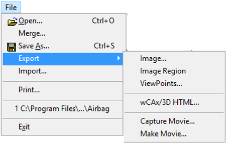
Export | Image: Saves current view as an image in the following formats.
- Bitmap Image (*.bmp)
- JPEG Image (*.jpg)
- TIFF Image (*.tiff)
- PNG Image (*.png)
Export | Image Region: Allows users to select a portion of scene to be exported into image.
Users can resize the highlighted viewer portion using a mouse.
Window Selection
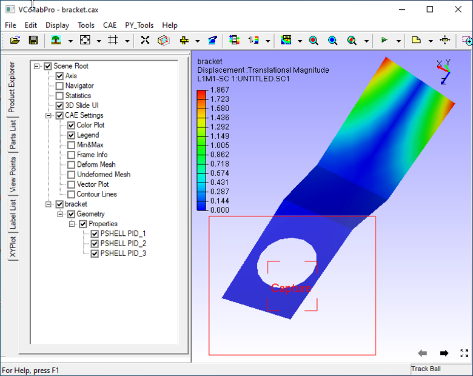
Exported Image
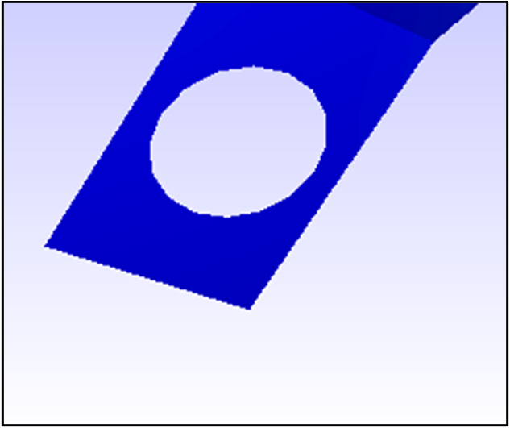
Export | ViewPoints: Users can export
- all viewpoints as images into a PPT(*.ppt) file.
- all viewpoints in a vpt (*.vpt) file.
- Filtered parts and results into a new cax (*.cax) file.
- Parts or Geometry and Results available across all viewpoints will be saved into cax.
- Other parts and results will not be saved.
Export | wCAx/3D HTML: Exports geometry with current scalar result and viewpoints data(selected by the user) into a wCAX / 3D HTML file format. wCAX is compressed and filtered data for the web. Visible parts and used results across all viewpoints are exported into wCAX/3D HTML file.
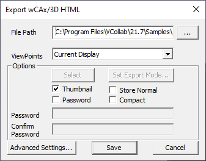
The fields that appear in the Export wCAX/3D HTML panel are explained below
File Path Output wCAX/3D HTML file path Viewpoints Allows user to select following viewpoint export options,
- All Viewpaths
- Current Viewpath
- Current Viewpoint
- Current Display.
- Selected Elements
Select This option is enabled only for selected elements option. Allows user to define a rectanglein the viewer. Set Export Mode This option is enabled only for Current Viewpath option. Allows user to set export mode 2D / 3D for each viewpoint. Thumbnail Stores thumbnail image for each viewpoint. Store Normal Exports vertex normals into WCAX file. It may increase the file size. Password Enables password setup to WCAX file. Compact Filters out duplicate data before exporting. This may take more time but will result in reduced file size. Advanced Settings This function pops up web viewer options dialog. It contains generic and premium feature On/Off functions. Based on that features enabled here, web viewer will diplay relevant interfaces. Save Saves wCAX / 3D HTML file Web Viewer Options
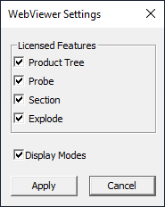
Product Tree If this option is checked, Product tree interface will be displayed in web viewer, otherwise not. Probe If this option is checked, Probe interface will be displayed in web viewer, otherwise not. Section If this option is checked, Section interface will be displayed in web viewer, otherwise not. Explode If this option is checked, Explode interface will be displayed in web viewer, otherwise not. DisplayModes If this option is checked, Display Modes interface will be displayed in web viewer, otherwise not. Apply Sets these options to be carried out. Note
Deletion of results will affect existing viewpoints. Those affected viewpoints will be ignored while exporting into wCAX / 3D HTML. Users need to be sure before deleting any result.
Animation state will be ignored if the Current Display option is selected.
In the Current Display option, unchecking Thumbnail option helps to reduce wCAX/HTML file size significantly.
In "WebViewer Settings" dialog, Premium features Product Tree, Probe, Section and Explode options will be disabled as below, if corresponding licenses are not available.
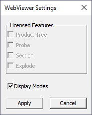
Export | Capture Movie: Captures all frames from viewer between start recording and stop recording. It exports them into an animated gif/avi/mp4 file.
Capture Movie panel
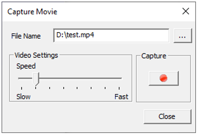
The fields that appear in Capture Movie Panel are explained below
File Name Output movie file name with path. Video Settings Speed Slider Control the speed by specifying number of frames per second Capture Buttons to start and stop recording the movie. Close Closes panel. Export | Make Movie: This additional feature creates a single animated gif/avi/mp4 file from a set of external images.
Make Movie panel
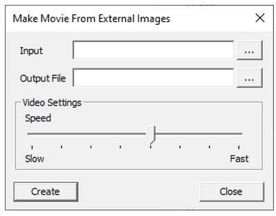
The fields appearing in the Make Movie Panel are explained below
Input Input path for the folder that contains set of images.. Output File Output path and file name. Video Settings Allows user to control the speed. Create Creates the movie. Close Closes panel Note
Before making a movie, make sure that the following constraints are met:
- All images in the folder should be of same format.
- The image folder should contain images for one dataset.
- Filename of images should have two string parts,
- One part is common name for all images
- The other part should be of numerical index. This unique string plays the role of arranging the
- frames in a proper order.
- This index part should be either first part or the last part of the file name.
Steps to export as Image
Click File | Export | Image, which opens Save As dialog box as below.
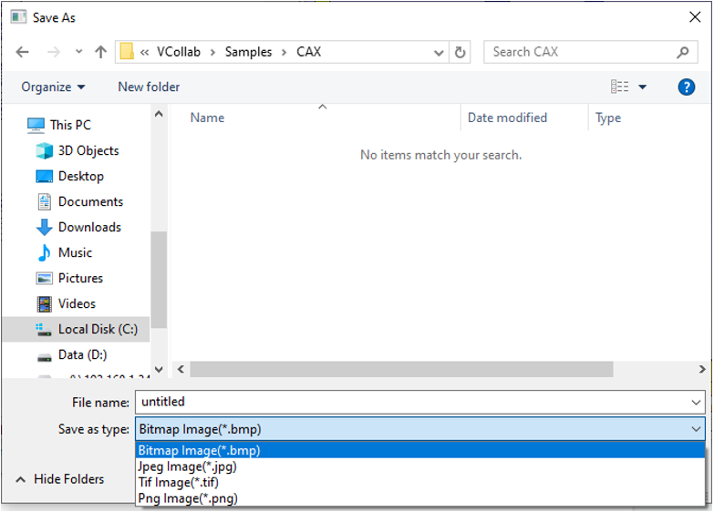
Choose a file type.
Provide a file name and click Save.
Steps to export using Capture Movie
Click File | Export | Capture Movie...
Provide file path and name in the Capture Movie dialog box.

Click Record
 to start capturing. .
to start capturing. .Record your actions on the model.
Click Stop
 .
.Wait for the “Successfully Captured” message box to appear.
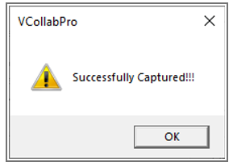
Click OK to finish the process.
Below is a sample movie created in VCollab Pro.
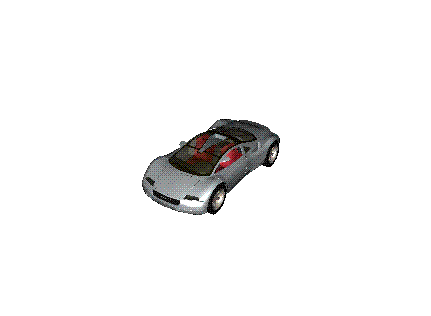
Note
If output file type is of image, all frames will be saved as image files.
Steps to make a movie from external images
Click File | Export | Make Movie... which opens up the Make Movie From External Images panel.
Select the input folder that contains a set of images.
Provide output file name.
Modify speed if necessary.
Click Create and expect a message box as below.
Click 'OK' to finish the process.
Steps to export Viewpoints to PPT
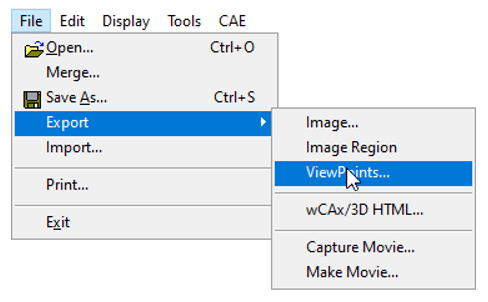
- Click File | Export | ViewPoints to open Save file dialog box
- Select the file type as* .ppt.
- Enter a file name.
- Click Save, which opens up a dialog which asks for a PowerPoint template (*.pot)
- Click Yes to provide a template.
- Click No to continue without template.
Now all the viewpoint states are inserted as images into PowerPoint. First slide is left as an empty page for the title of the presentation. If a viewpoint contains CAE Animation state, animation will be captured as an animated gif in the ppt file.
Steps to save viewpoints data into a new CAX file
- Click File | Export | ViewPoints
- Select file type as * .cax
- Enter a filename.
- Click Save.
Necessary geometry and results will be stored into the new CAX file.
Steps to export a portion of scene using Image Region
Click File | Export | Image Region
Viewers will be highlighted with a semi transparent editable window.
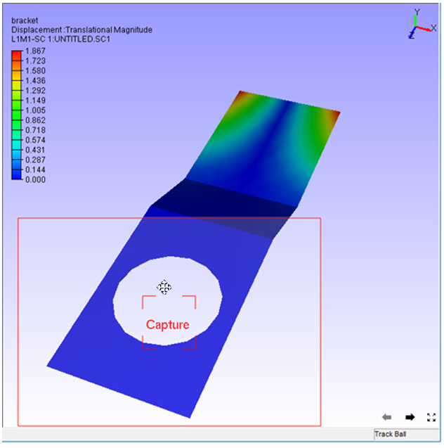
Move the cursor to the borders of the window to find Resize and Move cursor icons
Resize and position the window as required.
Click Capture, in the centre of the window.
File browser dialog will open up.
The captured portion of the scene is exported as an image.
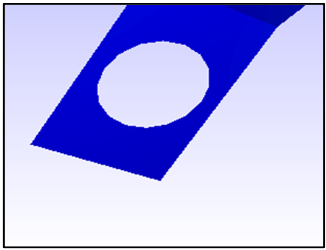
Steps to export selected elements using wCAx/ 3D HTML option
Click File | Export|wCAx / 3D HTML to open the panel as shown below

Browse and select the output wcax or html file path
Click Selected Elements in the drop down list.
This enables Select button which can be used to define a rectangular region in the viewer.
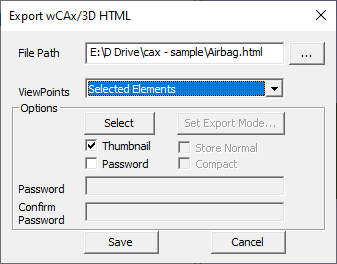
Click Select
Define a rectangular region in the viewer using mouse left button drag.
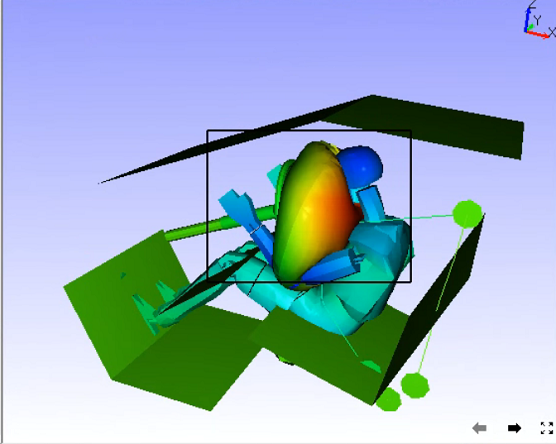
Elements inside the box region will be considered for export.

Orient the model to visualize the depth of box.

The box can be resized by clicking on the side planes and dragging with the mouse left button.
Enable Thumbnail option to capture the region selection as thumbnail image.
Click Save.